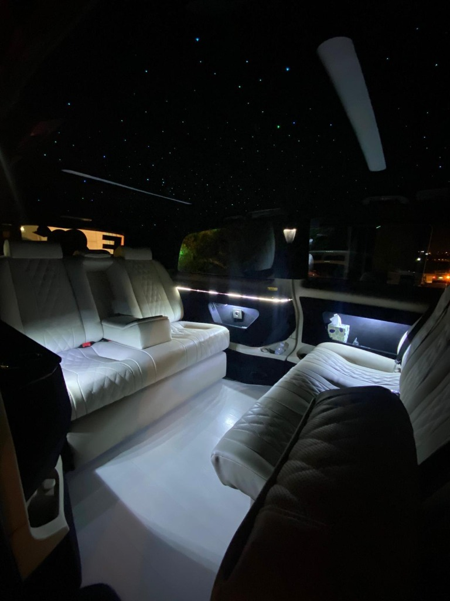

DİĞER HİZMETLERİMİZ
İhtiyacınıza özel VIP ulaşım çözümleri.

Yılbaşı gecesi Ankara'da taksi bulmak, otopark aramak ya da gece yarısından sonra eve nasıl dönüleceğini düşünmek kutlamanın tadını kaçırır. VipTrip ile yılbaşı gecesi şoförlü araç kiralayarak kutlamaya gidişinizi ve dönüşünüzü önceden planlarsınız: aracınız kapınızda, şoförünüz hazırda bekler.
Sizi evinizden alıp kutlama yerine bırakıyoruz, belirlediğiniz saatte yeniden alıp eve getiriyoruz.
Araç ve şoför gece boyunca sizinle. Birden fazla mekân, arkadaşlarınızı farklı adreslerden toplama ve gece sonunda herkesi evine bırakma.
13 kişiye kadar gruplar için Sprinter VIP. Herkes aynı araçta, aynı anda kutlamaya.
Çiftler ve küçük gruplar
Arkadaş grupları
Aralık ayındaki yıl sonu yemekleri, galalar ve kutlamalar için çalışanlarınızı ya da misafirlerinizi toplu olarak taşıyoruz. Birden fazla araçla aynı anda alım, etkinlik bitiminde güzergâha göre eve bırakma ve kurumsal fatura. Düzenli ihtiyaçlarınız için kurumsal transfer sayfamıza göz atabilirsiniz.
31 Aralık gecesi en yoğun olduğumuz gecedir ve araçlarımız erken dolar. Saatinizi ve güzergâhınızı şimdiden ayırtmanızı öneririz.
Kişi sayınızı, alınacağınız adresi, kutlama yerini ve dönüş saatini yazın; size net fiyatla dönelim.
Yılbaşı gecesi araçlarımız erken dolduğu için mümkün olduğunca erken, tercihen Aralık başından önce rezervasyon yapmanızı öneririz.
Araç ve şoför belirlediğiniz saatler arasında sizinle kalır. Birden fazla adrese gidebilir, arkadaşlarınızı farklı yerlerden alabilir ve gece sonunda herkesi evine bırakabilirsiniz.
Evet. Birden fazla araçla çalışanlarınızı toplu olarak taşıyoruz ve kurumsal fatura kesiyoruz.
Fiyat; araç tipi, kullanım süresi ve güzergâha göre belirlenir. WhatsApp'tan bilgilerinizi yazmanız durumunda size net fiyat veriyoruz.
İhtiyacınıza özel VIP ulaşım çözümleri.